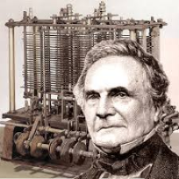

| Publications and Inventions |
|---|
In 1832, he published On the Economy of Machinery and Manufacturesabout industrial production which was well received. It describes what is now known as the Babbage Principlewhich noted the advantages of using division of labor in factories. |
In 1837, Babbage wrote a natural theology book called On the Power, Wisdom and Goodness of God, as manifested in the Creation. |
| In 1838 Babbage invented the pilot (commonly known as the cow-catcher), the metal frame attached to the front of locomotives to clear the track ahead. |
| Babbage also invented a tool used for eye examinations called the ophthalmoscope. |
| Machines |
|---|
| Between 1819 and 1822, Babbage built his first small model of the calculating engine (Difference Engine 0). Powered by cranking a handle, the machine calculated and printed mathematical tables. The machine was called a difference engineafter the mathematical theory on which the machine's operation was based. |
| The Difference Engine No.1 was designed to calculate and tabulate polynomial functions. Babbage was given 1,700 pounds by the British Government to begin constructing a full scale machine. Over the years more than 10 times this amount of money was spent on the project. In 1832, a small working portion was built. In 1833, work on the full scale difference engine was stopped. If the machine had been built it would have had over 25,000 working parts, weighted over 13 metric tons and have been over 8 feet (2.4m) tall. |
| In 1837, Babbage became interested in building a more ambitious analytical engine that would be more powerful than the original difference engine. This would be the first working computer for general-purpose computation. It would use punched cards for programming. A trial part was built but was never fully completed. He also designed a printer for his new engine. |
| In 1842, the government decided to stop funding the projects. |
| From 1846 to 1849, Babbage designed a new improved difference engine (Difference Engine No. 2). |
These machines were considered the very first mechanical computersto be invented. They were not built due to a lack of funding, and not due to any design flaw. The basic concept of his machines was similar to the modern computer which lead to him being called the father of the computer. |